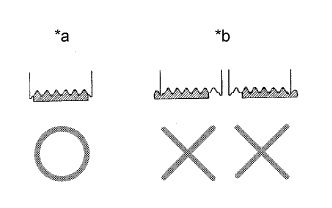

ПРИВОДНОЙ РЕМЕНЬ > ПРОВЕРКА БЕЗ СНЯТИЯ С АВТОМОБИЛЯ |
| 1. ПРОВЕРЬТЕ ПОЛИКЛИНОВОЙ РЕМЕНЬ ВЕНТИЛЯТОРА И ГЕНЕРАТОРА |
 |
Убедитесь в отсутствии износа, трещин и других признаков повреждения.
При обнаружении следующих дефектов замените вентилятор и поликлиновой ремень генератора.
|  |
Убедитесь в том, что приводной ремень правильно располагается в углублениях шкива.
| *a | ПРАВИЛЬНО |
| *b | НЕПРАВИЛЬНО |
 |
Убедитесь, что индикаторная метка натяжителя находится в диапазоне A, как показано на рисунке.
| *1 | Метка со стороны кронштейна |
| *2 | Метка со стороны рычага |
| *3 | Поликлиновой ремень вентилятора и генератора |
| *4 | Натяжитель |
| 2. ПРОВЕРЬТЕ НАТЯЖИТЕЛЬ ПОЛИКЛИНОВОГО РЕМНЯ В СБОРЕ |
Проверните шкив и убедитесь, что подшипник натяжителя вращается плавно и бесшумно.
| *a | Поверните |